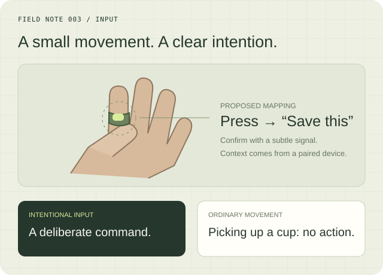
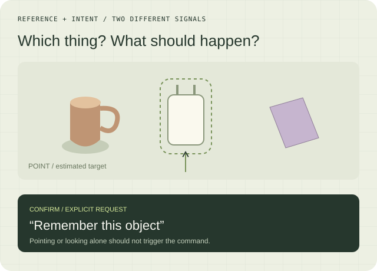

A deliberate press.
A ring surface, watch button, or small touchpad offers an explicit action. Study accidental presses, reachability, and use with occupied hands.
RESEARCH 003 / INPUT
How could we interact with AI without speaking or opening a chat? We’re exploring touch, subtle gestures, and pointing as ways to express a request—and the feedback that makes those requests clear.
A thumb press could mark a memory. A wrist gesture could dismiss a suggestion. But ordinary life is full of similar movements. An assistant needs to distinguish a command from reaching, carrying, or adjusting a sleeve.
Which inputs are comfortable, easy to learn, and reliable enough to use outside a controlled demonstration?

THREE INPUT FAMILIES TO COMPARE
Begin with a small command set: save, confirm, dismiss, and cancel. Compare interaction methods before committing to a new hardware product.
A ring surface, watch button, or small touchpad offers an explicit action. Study accidental presses, reachability, and use with occupied hands.
Study finger or wrist movements with compatible sensing hardware. Compare shared gestures with a few personalized examples.
Use a camera or tracked hand to indicate an object, then an explicit action to request help. Gaze could help select a target, but is not itself a command.
A gesture may express “save,” but the assistant still needs to know what to save. Explore how a selected object, recent event, or current interface supplies context. Give people a clear way to confirm or undo the interpretation.
Can combining target selection and confirmation reduce ambiguity without making interaction cumbersome?

THE DATASET / COMMANDS AND EVERYTHING BETWEEN THEM
Pair synchronized sensor windows with the intended command, task context, recognition result, and correction. Include long stretches of ordinary movement where the correct output is no command.
Start with prompted commands, then introduce selected everyday tasks. Keep prompted and spontaneous input separate. Use consented reference video when needed for verification.
A sensor model detects candidate input. An open language or vision-language model could learn how confirmed input maps to a contextual request. Raw motion does not become meaningful just by sending it to an LLM.
Track false activations per hour, missed commands, response time, corrections, and comfort. Hold out people and everyday activities; compare with a simple button baseline.
FIRST STUDY / FOUR COMMANDS, TWO INPUT METHODS
Compare explicit button or touch input with a small gesture vocabulary on suitable existing hardware. Investigate personalization from a few examples before attempting a custom ring.
A NATURAL CONNECTION